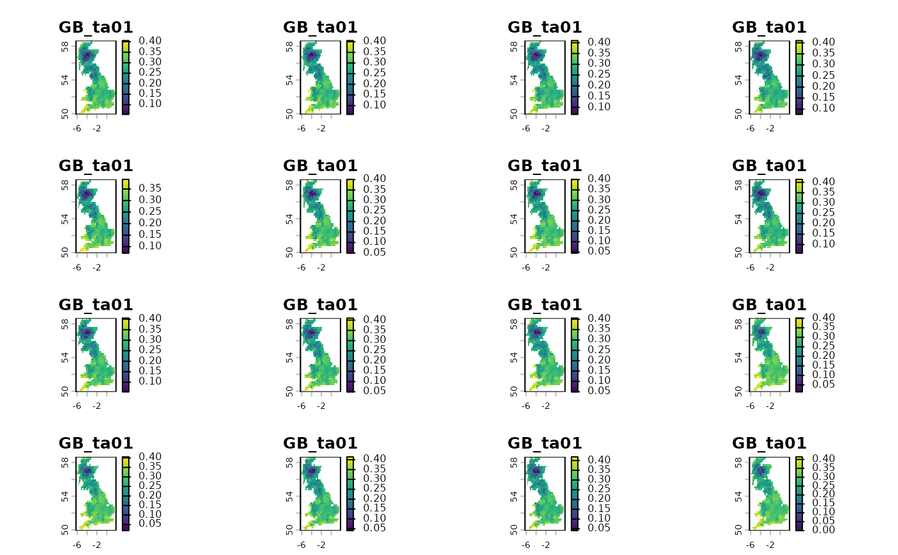

Title (TBD)
Arguments
- x
An object of class SpatRaster (terra)
- window
A length of the side of a square-shaped block of cells. Expressed in the numbers of cells, it defines the extent of a local pattern.
- fun
Function to summarize the values in a given
window. The default,c, returns all of the values inside specified windows.- ...
Additional arguments for
terra::extractor for the specified function
Examples
library(terra)
#> terra 1.9.50
x = rast(system.file("raster/ta_scaled.tif", package = "spquery"))
xc = spq_collapse(x, window = 5)
plot(xc)
